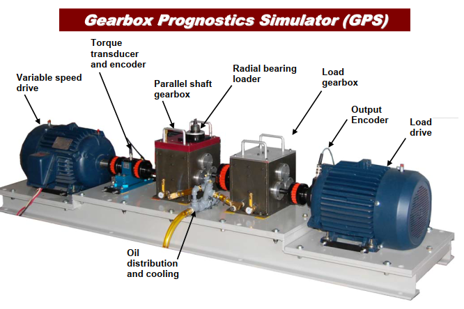
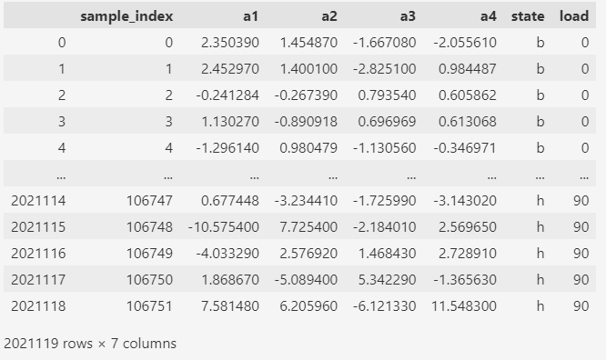
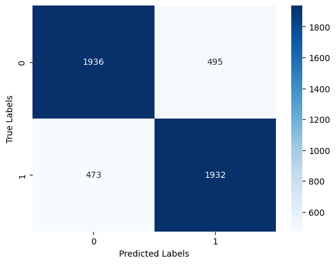
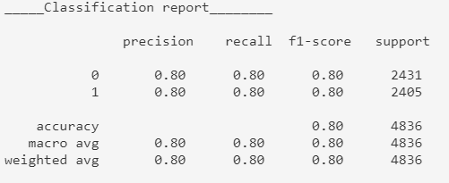

AI-powered gearbox fault diagnosis
Context
Gearbox fault diagnosis using vibration data is a process of analyzing the vibration signals produced by the gearbox during its operation to identify any faults or abnormalities in the system. In general, healthy gearboxes produce a predictable and stable vibration pattern, while faulty gearboxes produce irregular or abnormal vibration patterns. By analyzing the vibration signals, it is possible to identify various types of faults in the gearbox, such as gear wear, tooth breakage, misalignment, and bearing damage.
Machine learning can be used to predict tooth breakage issues in gearboxes by analyzing the vibration data collected from the gearbox during operation.
Data and Approach
I used a vibration dataset recorded using a diagnostic simulator in healthy and broken tooth conditions. The data is available at National Renewable Energy Laboratory webpage https://data.openei.org/submissions/623.
There are 20 files in total (10 for each condition) containing data from 4 sensors (a1 through a4) for a load ranging from 0% to 90%. Each file contains roughly 50-60 min of data with on average 100,000 observations at 30Hz. When combined all files, there are a total of 2,021,118 observations. In the state column 'b' stands for broken tooth, 'h' stands for healthy.
Data Analysis
To analyze this dataset, I combined the reading from all four sensors into a single column using pandas melt function, tagged with the sensor, load and state of the gearbox. This facilitates plotting of data for each sensor systematically in Python.
First, I started with visual inspection of sensor readings for healthy and broken gearboxes at different loads. When plotted raw values side by side, the differences were not perceptible with the naked eye.

For a more comprehensive visual analysis, I used seaborn 'violin' and 'boxen' plots to show the distribution of sensor readings and compare like for like between the healthy and broken gearboxes for the same load and sensor.
Each column is a different sensor, each row is increasing load. Each plot shows the distribution of reading values between the 'healthy' and 'broken' gearbox

Apparently, there is a perceptible difference between 'healthy' and 'broken' gearboxes on sensors 'a1' and 'a2' , especially as the load increases. The differences in sensors 'a3' and 'a4' don't appear to be significant. Finally, I list the overall mean and standard deviation from all four sensors separated by their health. Here, unlike violin plots, I observed a clear difference between healthy and broken signal at sensors 'a1' and 'a3'.

Data manipulation and feature engineering
As observed in the previous section, statistics describing the spread of data may differentiate between gearboxes. In this section, I created the features which will be input to the machine learning model for learning.
First, for each unique combination of 'state', 'load', and 'sensor' columns in df_melt, I grouped the corresponding rows using the groupby method. Then, for each group, I split the 'reading' column values into chunks of 500 using numpy.split. For each chunk, I then computed the following statistical measures:
- Mean,
- Standard deviation,
- Kurtosis, and
- Skewness
Finally, I created a dictionary of these statistics along with the corresponding values of 'load' and 'sensor' columns. The dictionary is appended to a list 'data'. I then assigned a binary label of 1 if the 'state' column value is 'broken' and a label of 0 otherwise.

Results
I used the TPOT Automated Machine Learning tool to find the best classifier to differentiate the gearboxes. TheTPOTClassifier searches over a broad range of supervised classification algorithms, transformers, and their parameters.
from tpot import TPOTClassifier
# https://epistasislab.github.io/tpot/using/
tpot_td = TPOTClassifier(generations=5, random_state=42, max_time_mins=20, verbosity=2, cv=3)
tpot_td.fit(X_train, y_train)
print(f'Best accuracy score: {tpot_td.score(X_test, y_test):0.2%}')
tpot.export('tpot_gears_pipeline.py')
In about 20 minutes, the best pipeline is found as the ExtraTreesClassifier having an accuracy score of ~80% with the included parameters:
Best pipeline: ExtraTreesClassifier(input_matrix, bootstrap=False, criterion=entropy,
max_features=0.45, min_samples_leaf=2, min_samples_split=8, n_estimators=100)
Best accuracy score: 79.98%
This is a meta estimator that fits a number of randomized decision trees (a.k.a. extra-trees) on various sub-samples of the dataset and uses averaging to improve the predictive accuracy and control over-fitting. I further calculated the confusion matrix and associated metrics:
Out of 4836 test examples, the majority of healthy and broken gearboxes (true negatives and true positives respectively) are correctly predicted. At 495 occasions, the model predicted the gearbox to be faulty while it actually fine (false positive). Similarly, the model missed to capture a faulty gearbox at 473 occasions (false negative). Overall, the precision, recall and f1-scores of the model were all 80%.
